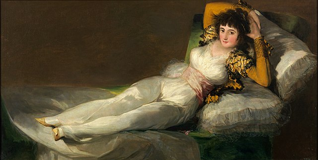
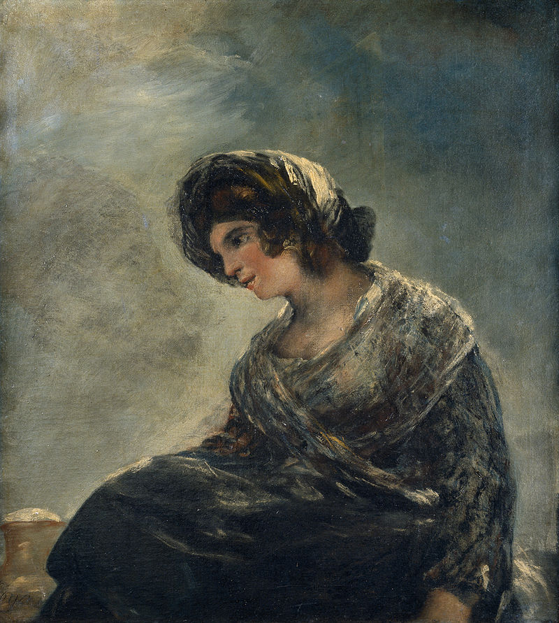

El 3 de mayo en Madrid
El 3 de mayo en Madrid (también conocido como "Los fusilamientos del 3 de mayo") es una obra maestra del pintor español Francisco de Goya, realizada en 1814. Es una de las pinturas más icónicas del arte occidental, especialmente por su poderosa representación del horror de la guerra y su enfoque en la humanidad sufriente. Esta obra, junto con su complementaria "El 2 de mayo de 1808" (también de Goya), está considerada uno de los más grandes testimonios visuales sobre la represión y la violencia política.
Según la página del Museo del Prado nos cuenta que...
La noche del 3 de mayo de 1808, los franceses fusilaron, en varios puntos de Madrid, a los patriotas detenidos tras su alzamiento del día anterior contra las tropas francesas. Los madrileños, con armas improvisadas, intentaron detener la salida de Palacio del último de los infantes, don Francisco de Paula, el menor de los hijos de Carlos IV y María Luisa, que iba a ser conducido a Burdeos para reunirle con sus padres.
Francisco de Goya fue un pintor español muy importante que vivió entre 1746 y 1828. Empezó trabajando para los reyes y la nobleza de España, haciendo retratos elegantes. Sin embargo, con el tiempo, su arte cambió mucho.

Más obras de Goya
La maja Vestida (1797-1800)

El 2 de mayo de 1808 (1814)

La lechera de Burdeos (1827)

Más info. en:
Página web oficial de El Museo del Prado